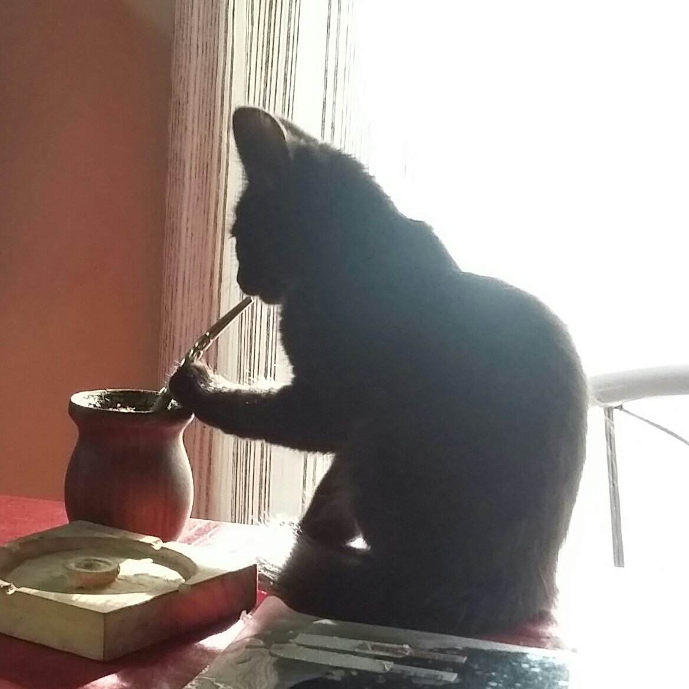

Probando HTML
Mi nombre es:
Sabrina Segovia
Objetivos del curso:
Aprender a programar.
Mini Bio:
Estudiante de letras y bajista. Me gusta el cine argentino y el jazz.
Multimedia

LISTAS</h4> <h5>Lista numerada</h5> <ol>5 pasos para preparar un mate</ol> <li>Calentar el agua a 80°C</li> <li>Colocar la yerba adentro de un mate</li> <li>Tapar la boca del mate y sacudirlo para quitarle el polvillo</li> <li>Agregar agua fría y dejar reposar (así evitamos que se queme la yerba)</li> <li>Agregar la bombilla, el agua caliente y tomar!</li> <h5>lista de viñetas</h5> <ul>5 nombres</ul> <li>Jorge Luis Borges</li> <li>Juan José Saer</li> <li>Ricardo Piglia</li> <li>Carlos Busqued</li> <li>Adolfo Bioy Casares</li> </body> </html>